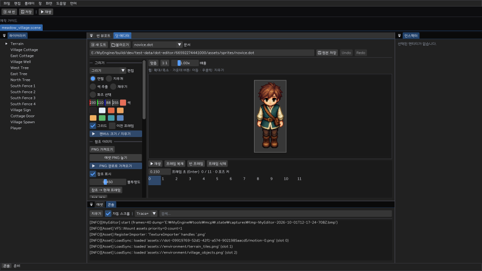

만들고 · 저장하고 · 플레이하기
초원 마을에서 첫 게임을 시작하세요.
기본 프로젝트를 만들면 개별 건물·지형 오브젝트와 레벨 1 캐릭터가 준비됩니다. 장면을 수정하고 저장한 뒤 Play로 바로 확인할 수 있습니다.

build/dev/apps/editor/Release/MyEditor.exe를 실행합니다.- 파일 → 새 프로젝트에서 이름·폴더를 지정하고 기본 콘텐츠 사용을 선택합니다.
- 프로젝트를 저장하고 Play를 누릅니다. WASD 또는 방향키로 걷고 E로 상호작용합니다.
왜 기본 프로젝트로 시작하나요?
씬·에셋 GUID·충돌·캐릭터 구성의 연결을 실제로 확인할 수 있습니다. 새 프로젝트는 원본 템플릿을 복사하므로 제작 중 변경이 다른 프로젝트에 전파되지 않습니다.
근거: ProjectContext::Create, game/starter/meadow_village.
장면 구성
건물과 지형을 오브젝트별로 편집하세요.
계층에서 개별 오브젝트를 선택하면 위치·스프라이트·충돌·행동을 인스펙터에서 바꿀 수 있습니다.
- 계층에서 건물 또는 지형을 선택합니다. 새 오브젝트는 계층의 생성 기능으로 만듭니다.
- 인스펙터에서 위치와 스케일을 수정합니다. 에셋 브라우저의 이미지는 뷰포트로 끌어 배치합니다.
- Ctrl + S로 활성 씬을 저장합니다. 전체 문서는 파일 메뉴의 프로젝트 저장을 사용합니다.
저장 구조와 이유
씬은 assets/scenes/*.scene, 이미지와 모션은 GUID 및 .meta로 연결됩니다. 에디터 배치 상태는 .myeditor에 따로 저장됩니다. 같은 오브젝트에 대한 변경은 기존 문서 Undo 스택을 사용합니다.
플레이어 구성
버튼 하나로 기본 이동을 구성하세요.
최상위 오브젝트를 선택하고 캐릭터 기본 이동 구성을 누르면 스프라이트·발밑 충돌·이동 본체·조작 컴포넌트가 추가됩니다.
- 기존 조작 캐릭터가 있으면 그 캐릭터를 편집하거나
enabled를 먼저 끕니다. 한 씬에는 활성 조작 캐릭터 1명을 사용합니다. - 최상위 캐릭터를 선택하고 이동 구성 버튼을 누릅니다. 기존 컴포넌트 값은 유지됩니다.
CharacterController2D.speed를 조절합니다. 대기·걷기 모션을 지정하고 Play로 충돌을 확인합니다.
왜 이동 설정을 묶었나요?
조작에 필요한 컴포넌트 누락을 막고 한 번의 Undo로 구성을 되돌리기 위해서입니다. 이동은 렌더 프레임과 분리된 고정 틱에서 계산합니다. 새 발밑 박스는 반폭 0.2, 반높이 0.12 월드 단위이며 이미지에 맞게 조정하세요.
근거: SetupCharacterMovement, ObjectSystem::Tick.
게임 규칙
이벤트를 행동에 연결하고 맵을 이동하세요.
코드 없이 메시지·표시 전환·위치 이동·맵 변경을 연결할 수 있습니다. 추가 규칙은 오브젝트의 Lua 콜백으로 작성합니다.
- 인스펙터에서
ObjectBehavior를 추가하고 연결을 만듭니다.Start,Interact,TriggerEnter,TriggerExit중 이벤트를 고릅니다. - 행동과 대상을 지정합니다. 대상 이름은 씬에서 유일해야 합니다. 빈 대상은 현재 오브젝트입니다.
- E 상호작용에는
InteractionTarget, 접촉 이벤트에는 트리거Collider2D를 구성합니다. - 출입구에
ScenePortal을 추가합니다.scenePath는assets/scenes/cottage.scene같은 프로젝트 내부 경로,spawnName은 목적지의 고유 오브젝트 이름입니다.
Lua와 컴포넌트의 역할
반복되는 이동·충돌은 공유 컴포넌트로 처리하고 콘텐츠 고유 행동만 Lua에 둡니다. 이벤트 연결은 순서대로 실행되는 목록입니다. 범용 노드 그래프나 시각 스크립트 전체를 구현한 기능은 아닙니다.
기본 마을의 표지판과 오두막 출입구에서 작동 예를 확인하세요.
픽셀 제작
참조 이미지를 보며 픽셀을 그리세요.
도트 에디터에서 PNG를 가져와 반투명 참조로 표시하고, 확대·이동하면서 픽셀을 편집할 수 있습니다. 원본은 .dot 문서로 저장합니다.

- 창 → 도트 에디터를 열고 새 도트 문서를 만듭니다. 제공 예제는
assets/sprites/novice.dot입니다. - 참조 이미지의 PNG 선택 버튼이나 에셋 끌어놓기로 가져옵니다. 불투명도·표시 여부를 조절합니다.
- 휠로 확대·축소, 마우스 가운데 버튼으로 이동합니다. 맞춤과 1:1 버튼으로 배율을 복원합니다.
- 브러시·지우개·스포이트·채우기·영역 선택을 사용합니다. 참조를 현재 프레임에 복사하면 가장 가까운 픽셀 방식으로 크기를 맞춥니다.
assets/sprites/hero.dot처럼 저장합니다. 이미 존재하는 다른 파일에 저장할 때는 덮어쓰기를 확인합니다.
원본과 내보내기를 나누는 이유
.dot에는 참조·픽셀·뼈·키·모션이 함께 들어갑니다. 런타임용 PNG와 .anim은 내보내기 결과이므로 다시 생성할 수 있습니다. 참조 입력은 PNG만 지원하며 최대 한 변 4096, 총 4,194,304 픽셀입니다. 편집 프레임은 한 변 512, 최대 64장입니다.
움직임 제작
부위를 뼈에 연결하고 포즈를 모션으로 내보내세요.
영역 선택으로 부위를 나누고 부모·자식 뼈를 만들면, 위치·회전 포즈를 키로 저장해 보간할 수 있습니다. 완성한 모션은 대기·걷기 또는 다음 모션에 연결합니다.
- 그리기 모드의 영역 선택으로 머리·몸통·다리 등 겹치지 않는 부위를 지정합니다.
- 리깅에서 부모를 선택한 뒤 뼈를 추가합니다. 기본 자세에서 피벗과 배치를 정합니다.
- 포즈 모드에서 프레임을 선택합니다. 뼈를 움직이거나 위치·회전을 입력하고 키를 기록합니다.
- 모션의 이름·시작/끝 프레임·반복·방향을 정합니다. 다음 모션을 지정하면 종료 후 이어집니다.
- 재생으로 확인하고 모션을 내보냅니다. 씬의 캐릭터를 선택해 대기 또는 걷기 지정 버튼으로 연결한 뒤 씬도 저장합니다.

구현 범위와 제작 시 주의점
분리 영역의 강체 이동·회전과 부모 계층을 픽셀로 베이크합니다. 메시 변형·IK·3D 모델 리깅은 지원하지 않습니다. 겹친 영역은 중복해서 그려질 수 있으므로 부위를 분리하고 가려진 픽셀을 보완하세요. 뼈 삭제는 자식부터, 목록의 마지막 뼈 순서로 진행합니다.
최대 뼈 64개·모션 32개. 키는 모션 구간 안에 기록합니다. 총 프레임 픽셀 4M, 참조 포함 6M을 넘으면 저장 전에 거부합니다. Undo는 최근 24개 편집을 보관하므로 최대 크기 문서는 메모리 사용이 큽니다.
결과 확인
2D와 3D에서 같은 장면을 확인하세요.
뷰포트의 2D/3D 전환은 같은 씬을 다른 카메라로 보여줍니다. Play는 편집 씬의 복제본에서 실행되어 Stop 뒤 원본 배치로 돌아갑니다.
- 뷰포트에서 2D 또는 3D를 선택합니다. 캐릭터의 발 위치·건물 가림·충돌 범위를 확인합니다.
- Play로 이동·상호작용·출입구·모션 전환을 확인합니다. Pause와 Step으로 진행을 관찰합니다.
- Stop 후 필요한 변경을 편집 씬에 적용하고 저장합니다.

좌표와 화질 기준
왼손 좌표계, +Y 위, 기본 PPU 48, 렌더 타깃 960×540을 사용합니다. 3D 카메라 전환으로 2D 이미지가 입체 모델로 바뀌지는 않습니다. 깊이와 알파 컷아웃 계약은 렌더 문서에 있습니다.
작업 보존
오류는 하단 상태와 콘솔에서 확인하세요.
상단 메뉴를 가리는 긴 오류 문구는 하단 한 줄 상태 영역으로 이동했습니다. 전체 내용은 툴팁과 콘솔에서 확인합니다.
- Ctrl + Z / Ctrl + Y: 포커스 문서의 Undo/Redo. 도트 편집과 씬의 모션 연결은 서로 다른 문서에 기록됩니다.
- 저장 실패: 경로·권한·남은 디스크 공간을 확인합니다. 실패한 저장은 dirty 상태를 유지하고 기존 JSON 파일을 교체하지 않습니다.
- 모션이 안 보임: 내보내기 성공·에셋 새로고침·캐릭터 모션 지정·씬 저장을 차례로 확인합니다.
- 캐릭터가 움직이지 않음: Play 상태, 활성 조작 캐릭터 수, 최상위 배치, 이동 속도·충돌 컴포넌트를 확인합니다.
소스 빌드와 검증
cmake --build build/dev --config Debug
ctest --test-dir build/dev -C Debug --output-on-failure직접 마우스·파일 선택창 조작, 다양한 DPI, 청취 테스트는 자동 API·프레임 캡처와 구분해 확인해야 합니다. 구현 상태와 우선순위는 개발 우선순위를 참고하세요.